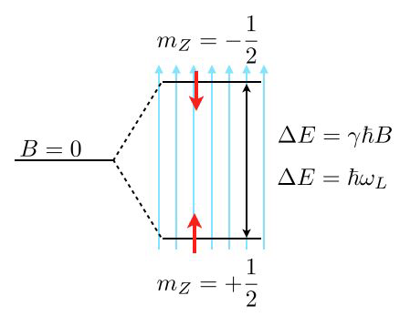
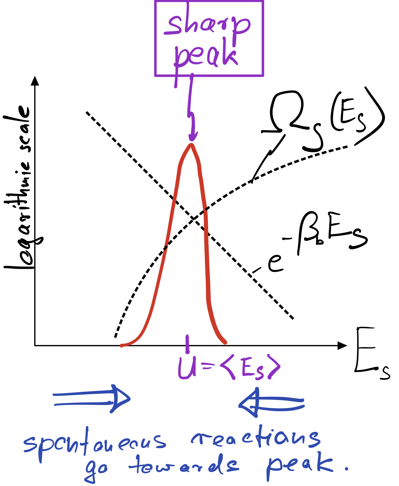
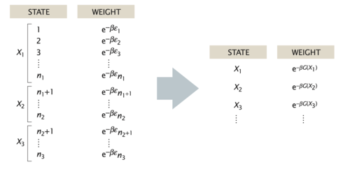

Energy exchange – canonical ensemble#
Most soft matter systems are closed but not isolated: they trade energy and volume with the environment (a.k.a. reservoir, bath, sorroundings). What can we say about \(P(\nu_s)\) in those cases?
The combination of System (index s) and Reservoir (index r) forms an isolated system with fixed \(E\), \(V\), \(N\). We can therefore apply our “Basic Principle” to conclude
All states with \(E_s+E_r=E\) are equally likely.
To reach a high energy state, s has to “steal” energy from b. What’s the probability \(P(\nu_s)\) of system state \(\nu_s\) irrespective of the state of the bath?
Note that the multiplicity of the bath alone controls the state of the system. I.e. the more states are available to the bath the more likely a given microstate of the system is. Energy exchange is important only in sofar as it modifies the number of states available to the bath and the system.
The multiplicity of microstates grows exponentially with the size of the system. We’ve already seen this in the case of coin flipping or spin systems, but it likewise holds for particle systems (as we will see). Therefore, it makes sense to introduce the logarithm of the multiplicity, as Ludwig Boltzmann did when introduced \( S\equiv k_\mathrm{B} \ln \Omega \qquad k_\mathrm{B}=1.38064852 × 10^{-23} {\rm J/ K}\) (see above).
Using the Boltzmann entropy, we can write
When the bath is very big (thermodynamic limit), we can Taylor expand the exponent,
Inserting above yields
The factor \(e^{-b E_s}\) is the Boltzmann factor, if we identify \(b\) and \(\beta_r\equiv (k_\mathrm{B} T_r)^{-1}\).
Thus,
Equivalently,
is the thermodynamic definition of the temperature of the reservoir.
Implication: The ratio of probabilities of two microstates is given by the ratio of their Boltzmann factors
Note: the last term is just a short hand for the ratio of multiplicities of the reservoir at the different energies,
This makes it explicit that the likelihood ratios between two states of the system are fully controlled by the multiplicities of the reservoirs.
Example: Barometric height formula.
Consider a constant gravitational force \(F=-mg\) along the \(z\)-direction such that the potential energy is given by \(E=mgz+E_0\) where \(E_0\) is the energy at ground level. For simplicity, we set \(E_0=0\).
The potential energy difference due to a height difference \(\Delta z\) is given by \(\Delta E = m g \Delta z\). Therefore, the ratio of the probabilities to find a particle at a given position compared to a position elevated by a height \(\Delta z\) is given by
Thus, increasing your elevation by 8 km approximately leads to an e-fold reduction of the air density. (“approximately”, because (i) the temperature changes with height, (ii) molecules interact and (ii) the atmosphere is not in equilibrium).
So far, we just cared about ratios of probabilities. In general it is much harder to compute absolute probabilities, which requires computing a normalization constant – the partition function. In the present one-dimensional case, however, we can do it easily: The probability \(p(z)\) for finding the particle at position \(z\) is given by \(p(z)=\frac{1}{\lambda}\exp\left( -\frac{z}{\lambda}\right)\), which is properly normalized, \(\int_0^\infty p(z)=1\).
Example: Two-level-system
As another frequent application of Boltzmann’s law are state populations of two state systems, as we find them frequently in physics, e.g., for spin systems. Such two level spin systems are, for example, very important for nuclear magnetic resonance (NMR), which is an important tool to study the structure and dynamics of soft matter.

Consider the image above, where a single energy level at zero magnetic field (\(B=0\)) splits into two energy levels due to the interaction of a proton spin (red arrow) with the external magnetic field.
The magnetic moment of the proton spin may take two expectation values in the magnetic field, which are characterized by the magnetic quantum number \(m_Z=\pm 1/2\). The magnetic moment projected along the magnetic field direction is then
and the energy of the states
with \(\gamma=2.675222005\times 10^{8}\; \mathrm{s}^{-1} \mathrm{T}^{-1}\) being the gyromagnetic ratio of the proton. The energy difference for a nonzero magnetic field is therefore given by
which results for a magnetic field of \(B=1\; \mathrm{T}\) in \(\Delta E\approx 1.76\times 10^{-7}\;{\rm eV}\) or a Larmor frequency of \(\omega_\mathrm{L}=42\; {\rm MHz}\). This energy difference is almost negligible as compared to the thermal energy at room temperature \(k_\mathrm{B}T=2.6\times 10^{-2}\;{\rm eV}\). Yet, this small energy difference is used to give the contrast in NMR and related techniques such as MRI.
Using the Boltzmann distribution we can now calculate the ratio of the population of spins in the lower or excited state
which is very close to one:
If you consider now a volume of \(V=1\;{\rm {\mu m}}^3\) water, then you would roughly have about \(N=6.7\times 10^{19}\) protons. This then means that the excess number of protons in the excited state is just \(N_{+\frac{1}{2}}-N_{-\frac{1}{2}}=4.5\times 10^{12}\), which is extremely low. Thus, to detect something in NMR or MRI, a certain number of protons in the volume is required.
Meaning of equilibrium#
Since the Boltzmann factor \(\exp(E_S/k_\mathrm{B}T_R)\) strongly suppresses energies that are much larger than the thermal energy \(k_\mathrm{B}T_R\), one would think that system states with energies larger than \(k_\mathrm{B}T_R\) almost never occur.
No! Even if any particular high energy state occurs with very low (exponentially small) probability, it can be that we typically observe one of them if there are sufficiently many of them. What matters is not only the Boltzmann factor but also how many states the system has with a given energy.
To mathematize this insight, we introduce the multiplicity \(\Omega_S(E_S)\) of the system at energy \(E_S\). With that we can say that the probability to observe the system in a state with energy \(E_S\) is given by how many states with that energy exist times the probablity to observe one of them, i.e.,
Usually there is a pronounced tradeoff between the two factors appearing in this equation. As the system energy increases, we gain a lot of new system states. But with increasing system energy, we also lose increasingly loose bath states, in fact at an exponential rate precisely given by the Boltzmann factor. The result is a pronounced peak of the product of both factors at a particular energy \(E_S^*\). This typical situation is depicted below.
{kind=link}

In macroscopic systems, made up of O(Avogardo number) of particles, the peak becomes extremely sharp even in log space. In equilibrium, where our Basic Principle is satisfied, one therefore finds the system essentially deterministically at the energy \(E_S^*\) corresponding to the peak. That energy is called internal energy and can be found by maximizing the product of \(\Omega_S\) and the Boltzmann factor:
The internal energy can therefore be found graphically by following the trajectory of \(\ln \Omega_S\), which is concave (bending downward), until its slope equals \(\beta_R\).
In complete analogy to our definition of the temperature of the bath, \(\beta_R\equiv \partial_E \ln\Omega_R\), we now introduce the temperature of the system via \(\beta_S\equiv \partial_E \ln\Omega_S\). The above equation says that, at the peak, both temperatures have to be the same,
To make sure that the peak is actually a peak, we have to demand that the second derivative of \(\ln P\) is negative or, equivalently, that \(\partial_E^2\ln \Omega_S<0\). This condition is automatically met if \(\ln \Omega_S\) is a concave function, as sketched in the figure above.
To summarize: At equilibrium, large systems coupled to a bath are almost deterministically found at a particular energy, the internal energy, where the temperature of bath and system are equal.
If a large system is initially out of equilibrium, say it has a larger or smaller energy than \(E_S^*\), it will gradually move towards the internal energy as a result of its internal dynamics towards higher probability (towards the peak). This is indicated by the blue arrow in my sketch above, indicating that spontaneous reactions always proceed towards the peak. Any reaction going away from the peak, towards lower probability, requires some kind of work and would not happen by itself (more precisely, would occur only with very low probability).
Partition function#
To fully determine the probability \(P(E_S)\) to observe our system at a given energy \(E_S\),
we still need to evaluate a normalization constant \(Z\),
In large systems, the integral is dominated by the value of the integrand at the peak energy \(U\),
We define the Helmholtz Free energy \(F\) as
The free energy generally attains a minimum at equilbrium. The above expression shows that \(F\) can be lowered either by lowering the energy or by increasing the entropy. The tradeoff between lowering energy (more states for the environment) and increasing entropy (more states for the system) is a recurrent theme in statistical physics.
Equipartition#
The statistical physics of a system is particularly simple when the total energy only depends quadratically on the dynamic variables, e.g. the positions of particles or the length of a polymer. As we discuss below, the simplification comes from the fact that evaluating the partition function merely involved carrying out Gaussian integrals, which can be done analytically.
Note
The classical equipartition theorem, also known as the law of equipartition, equipartition of energy or simply equipartition, states that every degree of freedom that appears only quadratically in the total energy has an average energy of \(\frac{1}{2}k_B T\).
Consider one degree of freedom for a monoatomic gas. This degree of freedom is the kinetic energy of one atom along the x-direction, which is given by
\begin{equation} \mathcal{H}=\frac{p_{X}^{2}}{2 m} \end{equation}
According to the Boltzmann distribution, the probability to find an atom with a certain momentum is given by
\begin{equation} P\left(p_{x}\right)=\frac{\mathrm{e}^{-\beta\left(p_{x}^{2} / 2 m\right)}}{\sum_{\text {states }} \mathrm{e}^{-\beta\left(p_{x}^{2} / 2 m\right)}} \end{equation}
We can calculate the denominator, which is the partition function \(Z\), by summing up (or integrating when going to continuous states) over all possible momenta
\begin{equation} \sum_{\text {states }} \rightarrow \int_{-\infty}^{\infty} \mathrm{d} p_{x} \end{equation}
This yields
\begin{equation} Z\equiv\int_{-\infty}^{\infty} \mathrm{e}^{-\beta p_{x}^{2} / 2 m} \mathrm{~d} p_{x}=\sqrt{\frac{2 m \pi}{\beta}} \end{equation}
A simple but frequently used trick shows that the mean energy (like many other thermodynamic averages) can be obtained as a derivative of the logarithm of the partition function:
\begin{equation} \langle E\rangle=\frac{\int_{-\infty}^{\infty} \frac{p_{x}^{2}}{2 m} \mathrm{e}^{-\beta\left(p_{x}^{2} / 2 m\right)} \mathrm{d} p_{x}}{Z}=-\frac{\partial \ln Z}{\partial\beta}=\frac 12 k_\mathrm{B}T \end{equation}
This is the mean energy per degree of freedom. One can show that each degree of freedom, independent of the object (atom, colloid, parking car) is carrying this mean energy.
Equipartition is useful in many ways. The fundamental degrees of freedom, e.g. the vibrations of a single molecule are quadratic in the bond length. Similarly all rotational degrees of freedom are as well. Their occupation is determined by a Boltzmann distribution and readily visible in molecular spectra. On more macroscopic scales it is very useful in the field of force measurements using optical tweezers.
Example: Position of a Bead in an Optical Tweezer
In an optical tweezer, a polarizable object (e.g. a polymer bead) is hold in the intensity gradient of a focused laser beam. The nearly Gaussian intensity distribution of a focused beam leads, in first approximation to a linear force a parabolic potential and can be employed to measure tiny forces.

For one dimension of the 3D optical potential it can thus be written as
\begin{equation} F=-k x \end{equation}
and
\begin{equation} E=\frac{1}{2}k x^2 \end{equation}
Using the Boltznmann distribution for the potential provides the probability distribution for finding the particle at a certain position \(x\)
\begin{equation}
p(x)=\frac{1}{Z}\exp\left(-\frac{kx^2}{2k_B T} \right)
\end{equation}
which resembles a Gaussian distribution with a variance of
\begin{equation} \sigma^2=\langle x^2 \rangle =\frac{k_B T}{k} \end{equation}
We also readily recognize that the partition function \(Z\) is the normalization factor of the Gaussian
\begin{equation} Z=\sqrt{2\pi }\sigma=\sqrt{2\pi\frac{k_B T }{k}} \end{equation}
The mean potential energy is then calculated by
\begin{equation} \langle E \rangle =\int_{-\infty}^{\infty} E, p(x),dx=\frac{1}{2}k\int_{-\infty}^{\infty} x^2 p(x)dx=\frac{1}{2}k \frac{k_B T}{k}=\frac{1}{2}k_B T \end{equation}
With the help of the variance of the distribution mentioned above, we also recognize that the trap stiffness can be obtained by dividing th ethermal energy \(k_B T\) by the variance of the positional fluctuations.
\begin{equation} k=\frac{k_B T}{\langle x^2\rangle } \end{equation}
which is very helpful for the experiment calibrating the trap stiffness for using the tweezers for force measurements. According to that you just have to observe the position of the trapped object in the potential and measure the variance.
We will deal with this relation later again in the section about the fluctuation dissipation relation.
The second degree of freedom of a particle in an optical tweezer is given by its velocity \(v\). This is as well a quadratic degree in \(v\), yet its measurement turns out to be tricky. As the particle is carrying out Brownian motion in the trap, its velocity is not given by the difference of positions divided by the difference in observation times. To measure the velocity accurately one has to got to very short times, when the particle is carrying out ballistic motion. This has been achieved only about 10 years ago, while the distribution connected to the velocities, the Maxwell-Boltzmann distribution is already known for a very long time.
Take some time to have a look at the Maxwell-Boltzmann distribution again.
When a Macrostate is a Microstate#
In practice, we are often interested in the likelihood that the system is in a state that is described by some macroscopic parameter \(X\) that we can measure. For example, for a DNA molecule inside a cell, an interesting quantity, which can be measured using fluorescent markers, is the distance R between two sites on the DNA chain. Repeated measurements of \(R\) can to construct the probability distribution p(R).
In general, the probability of the macrostate \(X\) is given by the sum of probabilities of all the microstates of the system that adopt the specified value \(X\),
\begin{equation} p(X)=\sum_{i_{X}} p_{i}=\sum_{i_{X}} \frac{1}{Z} \mathrm{e}^{-\beta E_{i}} \end{equation}
For the DNA example, the sum in the above equation would run over only those microstates \(i_X\) that have the prescribed distance between the two labeled sites on the polymer, e.g. \(X=R\). Using the basic relation between the partition function and the free energy, \(F = −k_BT \ln(Z)\), we can express the probability of the macrostate X as
\begin{equation} p(X)=\frac{1}{Z} \mathrm{e}^{-\beta F(X)} \end{equation}
where
\begin{equation} F(X)=-k_{\mathrm{B}} T \ln \left(\sum_{i_{X}} \mathrm{e}^{-\beta E_{i}}\right) \end{equation}
is the free energy of the macrostate \(X\). Note that the formula for \(p(X)\) is identical to the Boltzmann formula for the probability of a microstate, with the energy of the microstate replaced by the free energy of the macrostate. Note that the sum on the right side of the last equation is not the partition function \(Z\) but that of the subensemble of microstates fulfilling the condition X, i.e. \(Z_X\). Similarly, when writing down the states and weights for the macrostates \(X\), the energy is replaced by the free energy, as shown in in the figure below. In this sense, one person’s macrostate is truly another person’s microstate.
